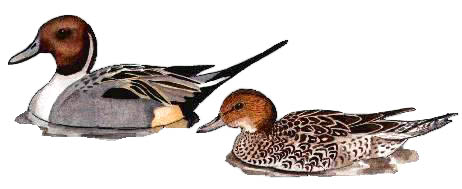

Pintail
An unusual but regular winter visitor to the reservoir, in small numbers.

1927 - Shot during the year!
20/12/52 - Single male
20/12/53 - Single bird
30/01/58 - Single female
13/04/58 - Single male
27/12/61 - 4 birds
16/12/62 - Single male
12/01/64 - 6 birds
14/01/65 - Single pair. Pair present on 21/01
05/01/67 - 2 birds. Single bird on 12/01
08/01/70 - 2 males
31/12/70 - Single male
12/12/71 - 4 birds
23/12/72 - 5 birds
20/01/74 - 4 birds
24/02/84 - Maximum count of 6 birds. Record count to that date, since exceeded in 2003
??/10/84 - 1 or 2 recorded
17/02/85 - 6 birds
10/03/85 - Single male. Remained until 21/03
20/10/85 - 2 birds
1986 - 5 in 1st winter period
25/08/86 - Single bird
01/02/87 - Single female
10/12/88 - Single female
29/12/90 - Single female
06/12/91 - Single male
18/01/92 - Single male. Remained until 25/01
22/11/92 - Single female
05/10/95 - Single male
05/01/96 - Single male
28/12/96 - Single male
03/02/98 - Single male
14/11/98 - 5 birds. 2 males & 3 females
21/10/99 - Single female
27/01/00 - Pair
24/12/00 - Pair
04/10/01 - A single female stayed for 4 weeks
07/12/01 - A single male
05/11/03 - 8 birds - a record count
28/01/05 - A single male
02/01/07 - A single male
11/01/09 - 3 birds (HCS)
16/01/17 - 2 females (KGH)
19/09/19 - 1 female and seen again on 21/09 (KGH)
09/12/19 - 3 males (DWH) and possibly another sighting on 13/12
31/12/25 - 1 female (KGH)